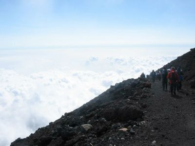
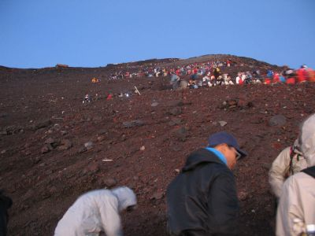
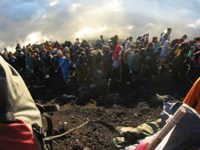
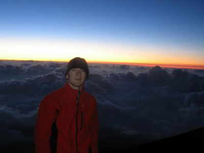

Mt. Fuji,
Aug 27-28, 2005
(organised by Masako)
Photos by Thomas Gumpenberger




the lunar landscape
throngs to the pilgrimage
on top of the world
Back to the previous walks page
Back to the Home Page